デモシーン発生以前の日本の状況
メガデモやデモシーンの概要については、 前記事 をご参照ください。日本にデモシーンが定着したのは、 デモパーティが定期的に開催されるようになった 2001 年あたりからとされています。 ここではそれよりももっと前の、デモシーンが徐々に浸透していった頃の状況について書いてみます。 これを書いている私は歴史家ではないので、 時系列や定義などはあいまいな場合がありますがご了承ください。 推測に基づく内容は、断言を避ける表現を使っていきます。 私が見てきたものを中心に書いていますので、内容が偏りがちな点もご了承ください。
Windows 普及以前（～1990 年代中頃まで）
ざっくりと Windows95 発売以前の、 ガラパゴスな国産パソコンが強い勢力を保っていた時期を見ていきます。 インターネットはまだ普及していない時期です。 デモシーンという概念は全く認識されていない頃、 国内で 3D グラフィクスブームがあり、 そこに海外からデモ作品が流れ込んできます。-
1980 年代末に国内でリアルタイム 3D グラフィクスがブームに
ゲームセンターでは、ウイニングラン（1988 年 ナムコ）をきっかけに リアルタイム 3D グラフィクスブームが起こります。 それ以前も、拡縮スプライトを使った疑似 3D のゲームは沢山存在したのですが、 ポリゴンベースになったことが本作の大きな飛躍でした。
ウイニングラン（1988 年 ナムコ）
ポリゴンベースのリアルタイム 3D グラフィクス
（注：エミュレータの映像のため絵が壊れています）
同時期に国産パソコン上でも、 8-bit マシン上でリアルタイム 3D グラフィクスを実現した、 スタークルーザー（1988 年 アルシスソフトウェア） がリリースされています。
スタークルーザー（1988 年 アルシスソフトウェア） PC-8801 mk2SR 以降
Z80 系 CPU による 4MHz 動作（動画は PC-8801FH/MH 以降で 8MHz モード）
プログラマである 吉村功成 氏はこの他にも、
日本初のリアルタイム 3D ポリゴンゲームとされるプラズマラインなど、
多くの 3D ゲーム制作に関わられている。
-
3D グラフィクスはホビープログラミングにおける実装チャレンジの定番課題に
この時期、アーケードゲーム機は、 パソコンや家庭用ゲーム機と比べてはるかに高性能でした。 アーケードゲーム機の性能にどこまで迫れるか？は、 ホビープログラミングにおける実装チャレンジの定番課題となっていました。 当時のパソコンには GPU 相当の機能が存在しなかったので、 3D グラフィクスはソフトウェアレンダリングで行う必要がありました。
様々な腕利きプログラマ達が、 様々な環境で、 各々のソフトウェアレンダラを実装していました。 その性能にはプログラマ達の力量がダイレクトに反映されたので、 現在のように性能不足を GPU のせいには出来ませんでした。 力量を示すには、ガチガチに最適化も入れなくてはならず、 実装はできるが、大変すぎてみんな死にそうになるという世界です。 いかに高速に座標変換を行うか、 いかに高速にラインやポリゴンを描くかを追求する最適化が盛んに行われました。
この時期、 グラフィクス処理を得意とした国産パソコンの一つである SHARP X68000 上は、 とくに最適化が過熱した環境の一つでした。 グラフィクス処理の高速化に関する書籍や雑誌記事も存在しました。
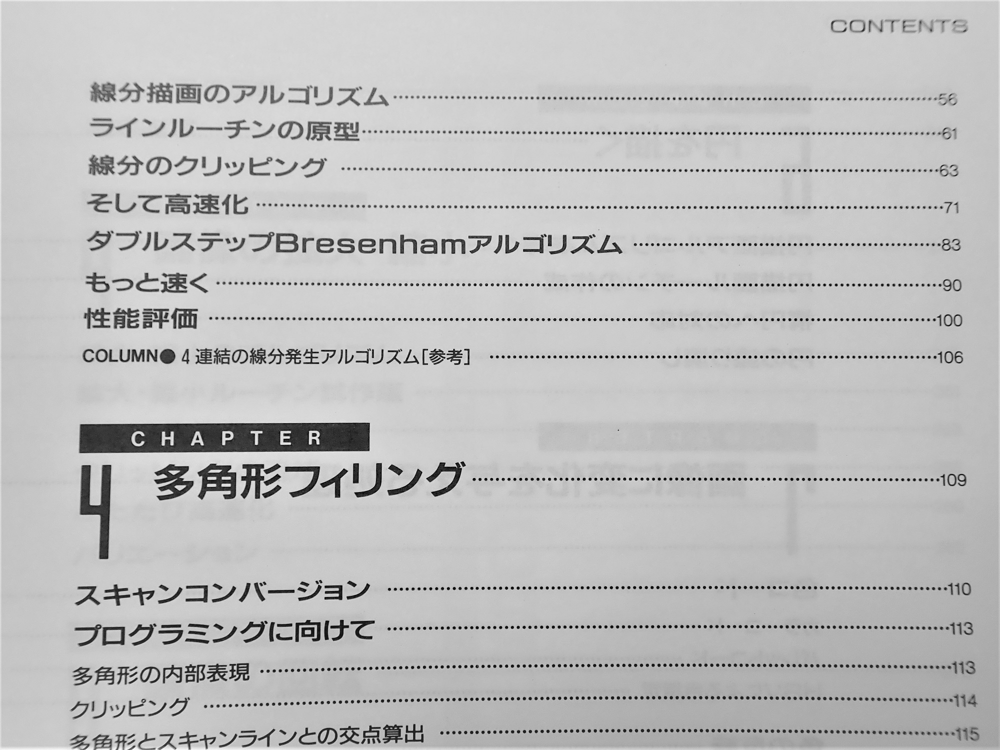
書籍 X68000 マシン語プログラミング（1991 年 村田敏幸）の目次。
ライン描画の最適化について 50 ページも書かれており、当時の最適化の過熱っぷりが伺える。
-
非リアルタイムな 3D レンダリングシステムの実装も盛んに行われた
この頃から活発に活動していた PROJECT TEAM DoGA は、 「自主制作アニメ」の世界にコンピュータを持ち込み、 それまで困難とされた個人でのアニメーション制作を可能にしました。 当時は一般的なパソコンで CG アニメーションを作ることは技術的な課題が多くありました。 個人で制作したレンダラを利用した作品も多く存在し、技術で競う側面がありました。
第 1 回全日本 X68000 芸術祭（1991）オープニングムービー
X68000 上で作成された有志による自作（オフライン）レンダラを利用
また、PROJECT TEAM DoGA は、この当時から CG アニメコンテスト というイベントを毎年開催しています。 多くの著名なクリエーターがこのコンテストを登竜門として利用してきました。 開催規模は大きく、エントリ作品は 1300 人が収容可能な大ホールで上映されました。
「彼女と彼女の猫」（1999 年 新海誠）
第 12 回 CG アニメコンテストグランプリ受賞
CG アニメコンテストは、 ストーリー性のある作品向けという印象がありますが、 当時のエントリ作品の中には、 作成者の自作レンダラの技術力をアピールする実験映像っぽいものや、 ちょっとメガデモっぽい雰囲気の作品もありました。
-
ディスクマガジンやミュージックディスクが同人ソフトとして作成される
海外デモシーンでは、ディスクマガジンやミュージックディスクが重要な作品カテゴリとして存在します。 これらは、インターネットが無い時代の欧州で、 デモが各地に郵便小包で配布される際に同梱されていたものです。 ディスクマガジンもミュージックディスクも、音楽を聴きながら記事を読むスタイルのもので、 両者は似たようなものです。
日本では、ディスクマガジンはパソコン用メディアを用いた雑誌として定着していました。 X68000 を対象とした「電脳倶楽部」（1988 年 5 月創刊）、 MSX と PC98 を対象とした「ディスクステーション」（MSX 版が 1988 年 7 月、PC98 版が 1990 年 10 月創刊）、 MSX を対象とした「MSX・FAN」（1991 年 9 月創刊）、 ファミコンを対象とした「謎のマガジンディスク ナゾラーランド」（1987 年 2 月創刊） 等がありました。 これを模倣する形で、 同人ソフトの世界でも、1990年代初頭ごろからディスクマガジンが盛んに作成されました。
-
MSX 上では海外ソフトウェアとともにデモシーン文化が流入
当時の国内で普及していたパソコンは、すべて国産のものでした。 そのため海外からのソフトウェアが輸入されてくることは考えらえない世界でした。 そのような中、唯一異なる状況に置かれていたのが MSX です。 MSX は、1983 年にマイクロソフトとアスキーが提唱した共通規格の名称です。 共通規格なので、海外のソフトウェアが動きます。 そのため海外デモシーンとの接触がかなり早い時期からあったようです。 当時の状況についてはまとまった記録はありません。 ここでは、google で掘って出てくる程度のことをまとめてみます。
1990 年初頭、「MSX CLUB GHQ」というサークル（？）が海外からの MSX 関連ソフトウェアを日本に持ち込み、 ソフトウェアベンダー TAKERU 上で販売するパブリッシャ活動を行っていました。 TAKERU は、当時のソフトウェア自動販売機で、お金を入れるとフロッピーディスクが出てくるというものです。 当時の MSX 専門雑誌である MSX・FAN 上には、internationalization [国際化(kokusaika)] という海外の MSX のゲーム等を紹介するコーナーがあり、MSX CLUB GHQ により持ち込まれたゲームソフトが紹介されていました。 MSX CLUB GHQ はこのほか、「侍円盤」（1992 年～）というディスクマガジンを国内外で発行していて、 そこには海外の MSX デモチーム FLYING BYTES の PSG Tracker やイントロ（簡単なデモ）が収録されていました。 ここで補足ですが、Tracker とは、音楽を作成するツールのことです。 当時日本では Tracker はマイナーで、主流は MML でした。
gamasutra 上に、 当時オランダのインディゲーム制作チームである ANMA (AndreLigthart & MartijnMaatjens) のゲームを、 MSX CLUB GHQ が日本に持ち込んだ経緯がわかるインタビュー記事 The Story Of ANMA: Two Schoolboys And A Game Development Dream が掲載されています。 TAKERU の明細書の実物コピーもあり、そこに MSX CLUB GHQ の名前が確認できます。 明細書の日付は「平成5年（1993 年）3月度」となっています。
MSX 上で起きていた海外ソフトウェアの流入において、主役はゲームソフトでした。 海外のデモシーン文化が積極的に日本で拡散されたというよりは、 海外から持ち込まれたものの中に、デモシーン文化由来のものが一部含まれていた、 と言った方が近いかもしれません。
-
Amiga のメガデモが X68000 ユーザーに衝撃を与える
Amiga とは、1985年にコモドール社より発売された、 CPU に MC68000 を採用したホビー向けパソコンです。
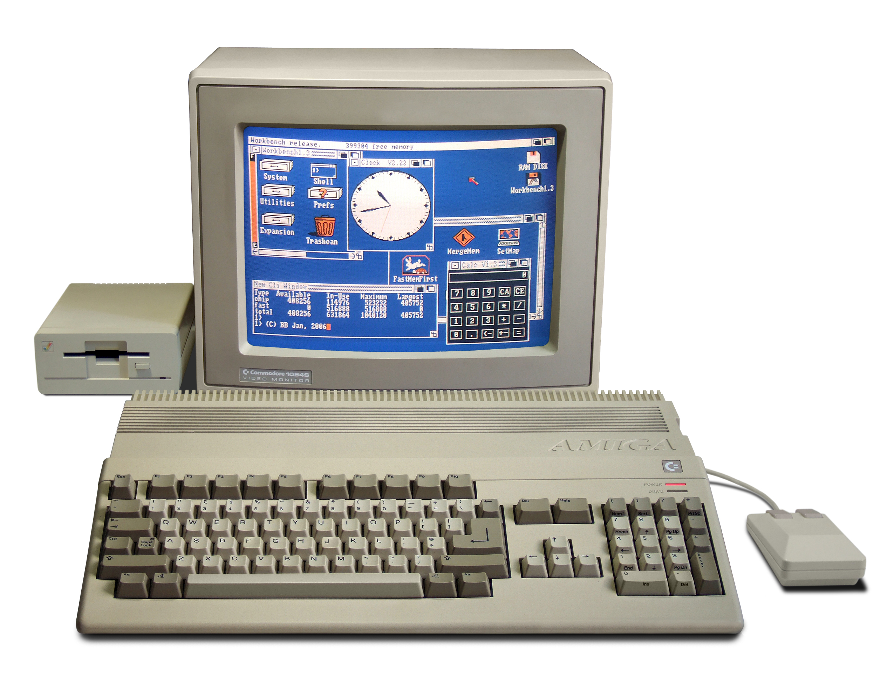
Amiga（Amiga 500）
（画像は wikipedia から抜粋 CC 表示-継承 2.5 ）
1990年代前半、日本国内では同じく MC68000 を搭載した X68000 が黄金期を迎えていました。 ユーザーの誰もが X68000 こそ至高であると信じて疑わないような状況でした。 そのような中 X68000 ユーザーの間で、 海外パソコンの Amiga は何かもっとすごいらしいぞという噂話が、ちょくちょく飛び交っていました。
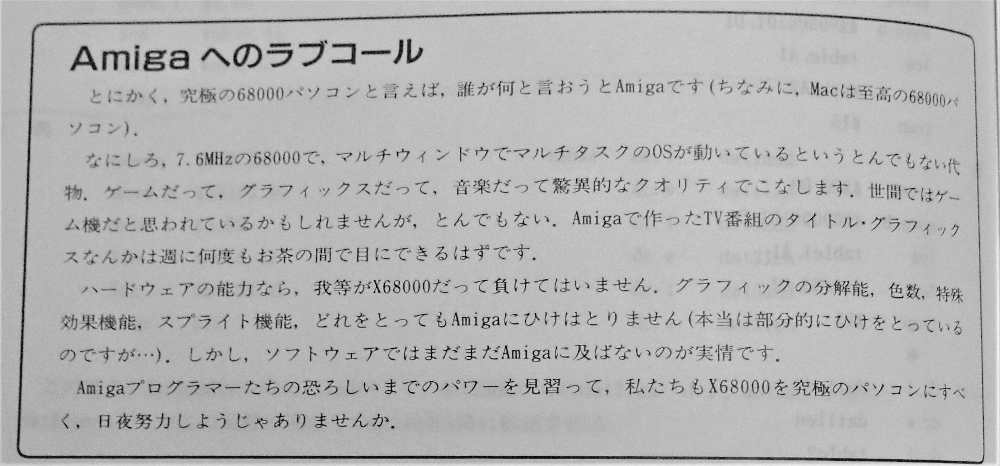
X68000 環境ハンドブック（1989 年 12 月 吉沢正敏/市原昌文）のコラム。
「Macintosh が至高の 68000 パソコンで、Amiga が究極の 68000 パソコンである。」 と書かれている。
じゃあ X68000 は何なのだ？
Amiga プログラマー達の恐ろしいパワーとは一体？
様々な国産パソコンが販売されていた当時の状況下、 わざわざ日本語対応していない、ソフトも情報も入手しづらい海外パソコンを入手する人はほとんど居ませんでした。 国産パソコンユーザーにとっての Amiga の印象は「謎のパソコン」でした。
そして 1993 年頃、海外のデモシーンは全盛期とも言える状況を迎えます。 ここでリリースされたデモは、日本国内にも届いていました。 中でも X68000 でリアルタイム 3D グラフィクスを研究していたプログラマに取って衝撃的だったのは、Amiga のメガデモ群でした。
9 Fingers (1993 年 Spaceballs)
Amiga 上でフロッピーディスク 1 枚にどれだけの映像を詰め込めるかを追求した作品。
わずか 7.16 MHz の CPU と DMA のみでリアルタイム動作を実現している。
その衝撃は、海外デモシーンで賞賛の言葉としてよく見かける "mind-blowing" そのものでした。 これが Amiga なのか・・・！と、 打ちのめされた X68000 ユーザーはさらなるリアルタイム 3D プログラミング追求の道へ進むことになりました。
Amiga のメガデモは、 図らずも X68000 の苦手な部分をえぐり出すような内容になっていました。 アーケードゲームの移植という用途では、 X68000 は Amiga よりも遥かに高性能だったのですが、 メガデモ的なことをやろうとすると、Amiga に軍配が上がりました。ここで、状況を理解しやすくするため、Amiga と X68000 のハードウェアの違いを補足しておきます。
このあたりの経緯を経験した X68000 ユーザーに取って、 Amiga はリスペクトはするけれど宿敵 という認識です。 現在のデモパーティでも Amiga は人気が高く、 パーティ会場では Amiga ユーザー達による Amiga コール （Amigaaaaa!!! と誰かが叫ぶと、別の人もそれに応じる） が行われるのですが、 それに応じる X68000 ユーザーは少ないです （これは、Amiga を宿敵と認識している Atari ST ユーザー等も、恐らく同様だと思われる）。
X68000 はグラフィクスに強いパソコンでしたが、 （1980 年代）当時のアーケードゲームレベルのスプライト表示機能を搭載していた一方、 リアルタイム 3D グラフィクスを想定した機能を持ちませんでした。 X68000 の VRAM は、 どのような画面モードでも 16bit per pixel でアクセスする仕組みになっていて、 扱いやすい反面で実行速度が犠牲になっていました。
一方 Amiga は、DMA を使った高速なグラフィクス描画を前面に押し出していました。 VRAM to VRAM 間の転送はバスをショートカットして 4 倍速で行われ、 しかも CPU アクセスの裏で走行可能とのことです。 DMA で横一ラインのピクセルを同一色で高速に塗りつぶすことができれば、 あとは応用次第でポリゴンが描画でき、リアルタイム 3D グラフィクスが可能だろうというのが、 Amiga の根底にある設計思想になっています。
X68000 で Amiga と同様のことを行うと、 DMA 転送中は CPU のメモリアクセスが止まる、 16bit per pixel のため描画速度が遅い、 グラフィクス転送用の高速パスを持たないので遅い等々の障壁があり、 リアルタイムポリゴン描画は不可能というのが共通の認識でした。 後にこれらの困難を乗り越えて、 X68000 上でのリアルタイムポリゴン描画は達成されるのですが、 ここでは詳細は書ききれないので割愛します。
またサウンド面でも大きな差があります。 X68000 は、当時のアーケードゲーム機で広く採用されたものと同等の FM 音源チップを搭載していました。 しかし、サンプリング音の再生は ADPCM が 1 チャンネルのみで、 しかも周波数固定のためせいぜい打楽器ぐらいにしか使えませんでした。 サウンド出力が ADPCM のみサポートというのがとても厄介な問題でした。 ソフトウェア的にサウンドを合成したとしても、出力段階で ADPCM にエンコードしなければならず、 これは CPU に相当な負担を強いる処理になっていました。 一方 Amiga は、周波数がリニアに調整できる非圧縮サンプリング音が 4 チャンネル同時再生出来ました。
-
SHARP X68000 上で作成されたメガデモ
この時期に、日本のパソコンである SHARP X68000 上で作成されたメガデモが存在します。 こちらは、1994 年に CraftworkJapan というチームが作成した X-Demo という作品です。 （資料提供 @aka_obi さん）
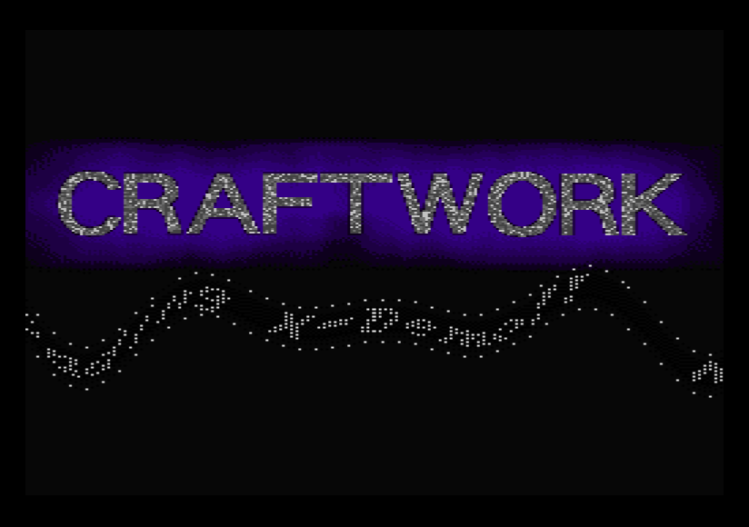
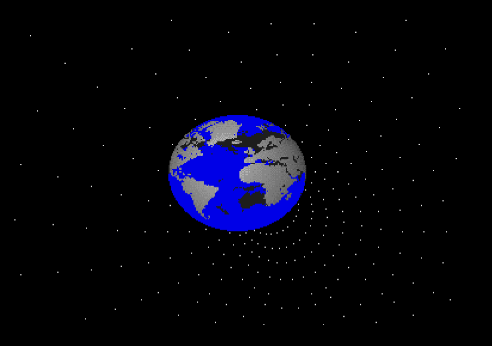
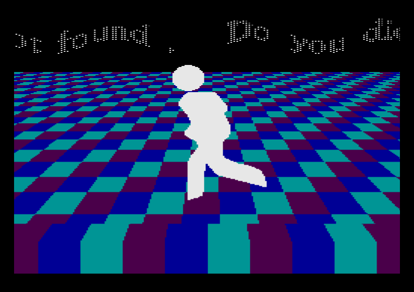
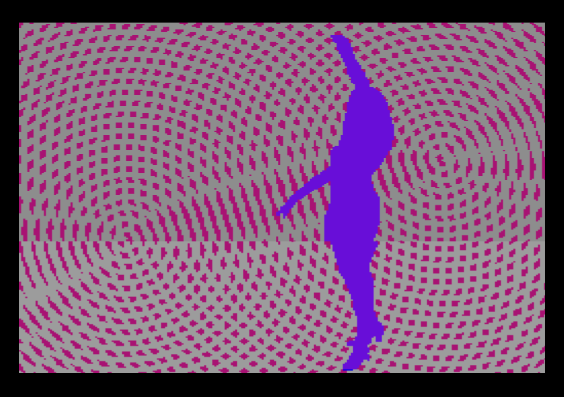
X68000 の X-Demo (1994 年 CraftworkJapan)
X-Demo シリーズは 3 作存在する。
X-Demo は、現時点で確認できている最も古い日本のメガデモです。 これより古いものをご存じの方がいらっしゃいましたら是非ご連絡ください。
一見してわかることは、 Amiga のデモチーム Spaceballs の作品に対するリスペクトの存在です。 Amiga のメガデモに触発されたことは間違いなさそうです。
-
panic データ、MASL データ
SHARP X68000 では、panic データと呼ばれる動画フォーマットが存在しました。 panic データは動画フォーマットと位置付けられていますが、 内部にネイティブコードを含ませることができるので、ほぼ実行ファイルです。 当時 X68000 上で、どれだけすごい panic データが作れるかという競争が起きました。
こちらは、「聖まりあんぬ BBS」の宣伝用に作られた panic データ（1994 年）です。 BBS とは、掲示板機能のみを持つサーバーに電話回線で直結して情報交換するという、インターネット普及前のパソコン通信の仕組みです。 この panic データは、当時その BBS にアップロードされていた画像データなどをつなぎ合わせて作成されています。 落書きっぽい絵で圧縮率を稼いだり、 バックグラウンドで画像のデコードを行ったり、 技術面でも頑張ったメガデモ的な作品となっています。 ファイルサイズは 1.66MB です。
X68000 聖まりあんぬ BBS CM（1994 年）
ところ変わればデモ変わるという観点で、ぜひ 9 Fingers と比較してみてください。
同様のフォーマットとして、PC-98 発祥の MASL データ（kuni-soft 1994年2月6日～）があります。 MASL データは panic データとは異なり、ネイティブコードを含まないため、 特殊なレンダラは実装できないかわりに移植性が高く、様々な環境でデコーダが提供されました。
-
Golden Weeds Project Japan
1995 年初頭に、日本で PC/AT 互換機上でメガデモを作成していた Golden Weeds Project Japan というチームが存在します。 このチームは独自のデモを作成していただけでなく、 DOS/V magazine や、C Magazine などの国内雑誌のメガデモ紹介記事、書籍「メガデモを作ろう」などを執筆しています。 メガデモという言葉を日本に定着させるきっかけとなりました。
Super Reality（1995 年 Golden Weeds Project）
Super Reality のリリースは 1995 年 3 月です。※ 作成者による解説では 日本で最初のメガデモとありますが、 時系列的には先に紹介した X-Demo の方が先にリリースされています。 また同記事中の「Demo for Windows」がそれよりも古い 1993 年 3 月とありますが、正しくは 1998 年 3 月です。
-
国産市販ゲームソフトに登場するメガデモ的要素
ゲーム内の OP や ED デモにメガデモが使われているケースがありました。
国内ソフトメーカーの CYBERTECH CUSTOM からリリースされたゲーム CARAT（PC-9801 版が 1992 年、X68000 版が 1993 年）では、 メガデモ・イントロ仕立ての ED デモが用意されていました。
X68000 版 CARAT エンディング（1993 年 CYBERTECH CUSTOM）
前年の NEC PC-9801 版よりも内容が強化されている。
同じく CYBERTECH CUSTOM から 1996 年にリリースされた NEC PC-9801 向けのゲームである Star Platinum では、 エンドロールにはっきりと "mega-demo ending staff roll" と出てきます。
NEC PC-9801 Star Platinum (1996 年 CYBERTECH CUSTOM)
16 色グラフィクスの限界に挑んだ作品として知られている。
CYBERTECH CUSTOM では当時社内でメガデモ鑑賞会が行われていたと伺っています。 このような鑑賞会は、他にも様々なコミュニティで開催されていたようですが、時系列がわかる記録がほとんどありません。 CARAT エンディングデモは、 少なくとも 1993 年以前には海外のデモ・イントロが国内に出回っていたことを示す重要な証拠です。
-
海外から輸入されたゲーム（ゲーム機）に含まれていたメガデモ成分
一部の海外のゲームソフトに、 メガデモ文化圏のデザインが含まれていて、 それが国内に輸入されてくる例がありました。
アタリが 1993 年（日本は 1994 年）に発売したゲーム機である Atari Jaguar は、 CPU に MC68000 が使われており、 Amiga や Atari ST で培われたエフェクトやデザインがそのまま搭載されたゲームが多数リリースされていて、 それらは国内にも輸入されていました。 なかでも 2000 シリーズ（Tempest 2000、Defender 2000）は、 国内でもとても高く評価されました。
Tempest 2000（1994年 Llamasoft）
音源は 4ch MOD フォーマットで作成されている。
ちなみに Atari Jaguar は日本では 3000 台しか売れなかった。
2000 シリーズのプログラマである Jeff Minter は、 後発の Atari Jaguar CD に搭載されていた Virtual Light Machine（VLM）というサウンドビジュアライザの実装も担当しています。
Virtual Light Machine （1995年 Jeff Minter）
（2020 年）現在の水準で見ても見劣りしない。
Atari Jaguar CD の国内販売数は、さらに 1/10 の 300 台だったと言われている。
SEGA のメガドライブは、 海外では GENESIS という名前で販売されていて、 海外由来のゲームが日本にも輸入されていました。
Vectorman（1995年 BlueSky Software）
メガデモのエフェクトのカテゴリに、
「ベクターボール」と呼ばれる手法がある。
Vectorman は、ベクターボールを利用した多関節キャラクタによるアクションゲーム。
MC68000 を搭載した環境上には、メガデモっぽいデザインのプロダクトが沢山発生する。
Windows 普及以降（1990 年代末期～）
1990 年代末期、Windows95 発売に伴い、 ガラパゴスな国産パソコンが現在のような PC に置き換えられていきました。 機種ごとの互換性の壁はなくなり、ネット上では技術情報のやり取りが活発化していました。-
日本でもデモが広く知られるようになる
1990 年代末期、国内の雑誌にメガデモ紹介記事が多く掲載されました。 それまで一部界隈でのみ知られていたメガデモが、広く認知されるようになりました。 「メガデモを作ろう」（1997 年 SOFTBANK BOOKS）という技術書や、 「coding style」（1998 年 zavtone magazine）というデモシーンの文化的側面を取材した書籍も刊行されました。 このあたりの時系列は、 全日本波形平和会（略して 波平会 もしくは N.H.K.）の Odaki さんが作成されているリスト に詳しくまとまっています。
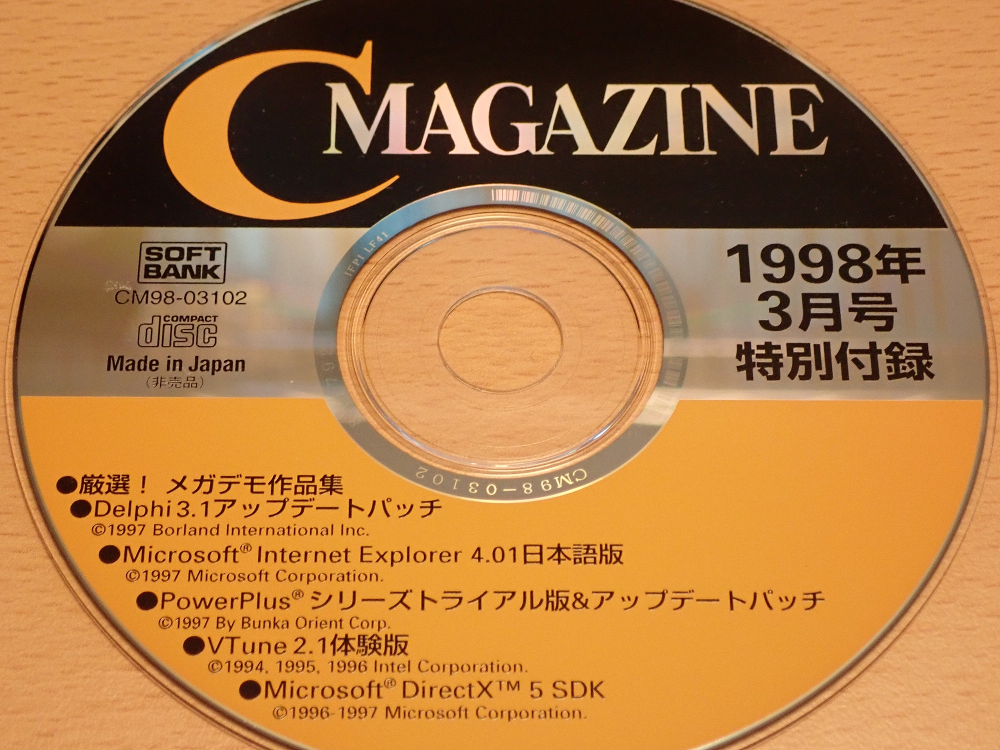
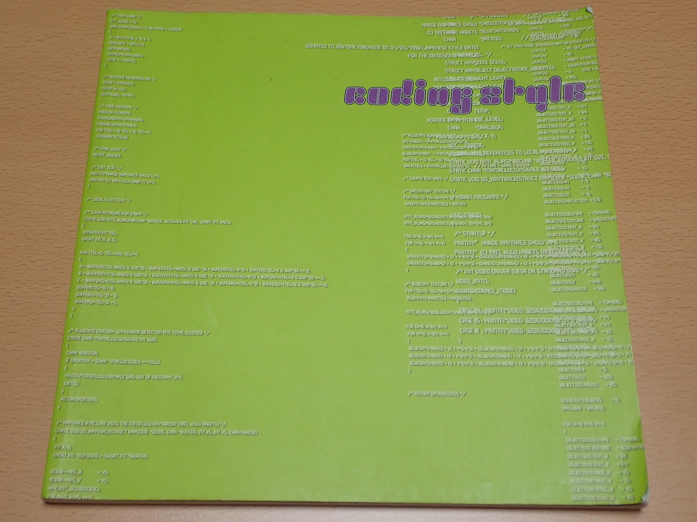
左 : C Magazine 1998 年 3 月号 特集記事｢メガデモ---驚異のコーディング世界｣。 残念ながら手元には付録 CD しか残っていませんでした。
右 : coding style。一見、技術系の書籍っぽいですが、中身は写真とインタビュー記事のみで構成されています。
秋葉原では、かつてデモシーンの中心的な Web サイトであった Hornet のアーカイブを収録した公式 CDROM（HORNET UNDERGROUND vol.1~2）や、 MOD データとそのデータフォーマットに関する資料を収録した CDROM を購入することが可能でした。
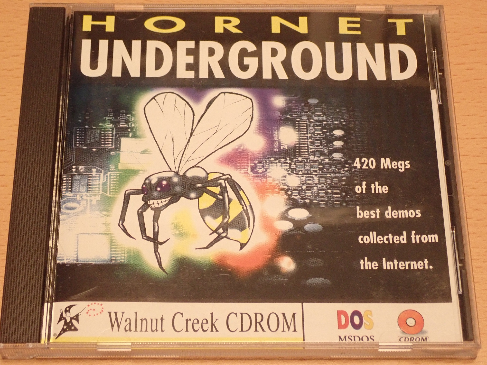
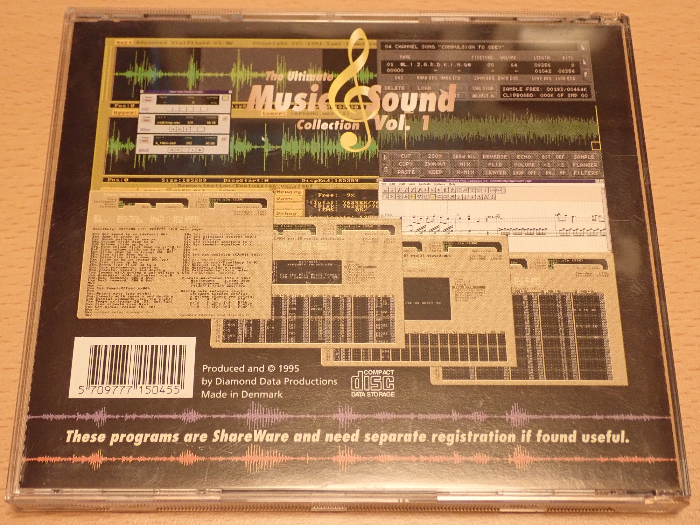
当時秋葉原に存在した LASER5（輸入モノに強いショップ）で入手したもの
左 : HORNET UNDERGROUND（主要パーティでリリースされたデモが収録されている）
右 : Ultimate Music Sound Collection（膨大な量の MOD データと技術資料が収録されている）
-
日本でもデモの実装が盛んにおこなわれた
この時期国内には、 デモで使われる定番エフェクトを自前実装したプログラムを掲載しているサイトが沢山ありました。 単に実装を技術的に解説しているのではなく、進捗をアピールして競争するような形です。 こういった動きは（2020 年）現在以上に活発でした。
当時 GPU の普及も始まっていましたが、 海外デモシーンでは「GPU 利用＝妥協」という認識があって、 ソフトウェアレンダリング（CPU のみによる描画）による最適化競争が展開されていました。 国内サイトでも、 デモシーン関連サイトで扱われる技術記事は、 ソフトウェアレンダリングに関するものがほとんどでした。
1997 年、インテル X86 プロセッサに新たに MMX 命令と呼ばれる命令セットが追加されました。 これらはマルチメディア（＝グラフィクス・サウンド）向けの命令セットになっており、 従来のレガシーな 486 命令セットでは困難とされた、 ピクセルの飽和演算やαブレンド処理などを効率的に実行可能でした。 MMX 命令を詳細に解説した技術書も多数刊行されました。 MMX 命令は整数演算しかサポートしていませんでしたが、 現在の直交性に乏しく CPU 世代で分断しまくっている SSE 命令とは異なり、 書いていて楽しい良い命令セットであり、 それらを活用したアセンブラプログラミングがブームになっていました。
-
２ちゃんねる上ではデモに関するスレッドが盛況
SNS のようなものが無かった当時、 特定ジャンルの話題のため集まれる場所と言うと ２ちゃんねるぐらいしかありませんでした。 ２ちゃんねる上にはメガデモに関するスレッドがあり、とても盛況でした。 これは後の２ちゃんねる発祥のオンラインデモパーティである 2chparty に繋がっていきます。 ２ちゃんねるは匿名掲示板のため、 スレッド上の書き込み番号を ID のようにして名乗る習慣があります。 日本のデモシーナにはこの頃の ID で活動されている方々がいらっしゃいます。
デモ・デモシーンについてまとめた当時の国内個人サイト群はほどんど失われている一方で、 ２ちゃんねるの過去ログは良く保守されていて、現在でも参照可能です。
＃＃＃メガデモを語る＃＃＃ （2001/01/16）
過去ログから、 「これだけのデモ好きが集まっているのだから、日本でもデモパーティを開催してはどうか？」 と、パーティ開催熱が高まっていく様子が確認できます。
-
作品は個人の web サイト上で公開された
この時期、すでに独自のデモを作成されている方々もいらっしゃいましたが、 受け皿となるデモパーティはまだ存在しなかったため、 それらの作品は個人の web サイト上で公開されていました。
インターネット普及以前、国内のホビープログラミング成果物はどこでリリースされたのか
話は再び 1990 年代前半あたりに戻ります。-
コミケでメガデモが売られている！
インターネットの無い当時、 個人が何か作品を広く配布したい場合、コミケなどの展示即売会が利用されました。 1990 年時点でコミケの推定参加者数は 25 万人 に達していて、大勢に向けて作品をリリースする場としては適していました。
先ほど 1990 年代前半の作品として紹介した「X-Demo」や ディスクマガジン・ミュージックディスクなどは、 いずれもコミケなどの展示即売会で同人ソフトとしてリリースされていました。 日本人的感覚でいうと、コミケにはその時点の大抵のサブカルが集結するので不思議なことではありません。 しかし海外デモシーンの認識からすると、 「メガデモが売られている」 ということは不思議な感じで捉えられるのではないかと思います。
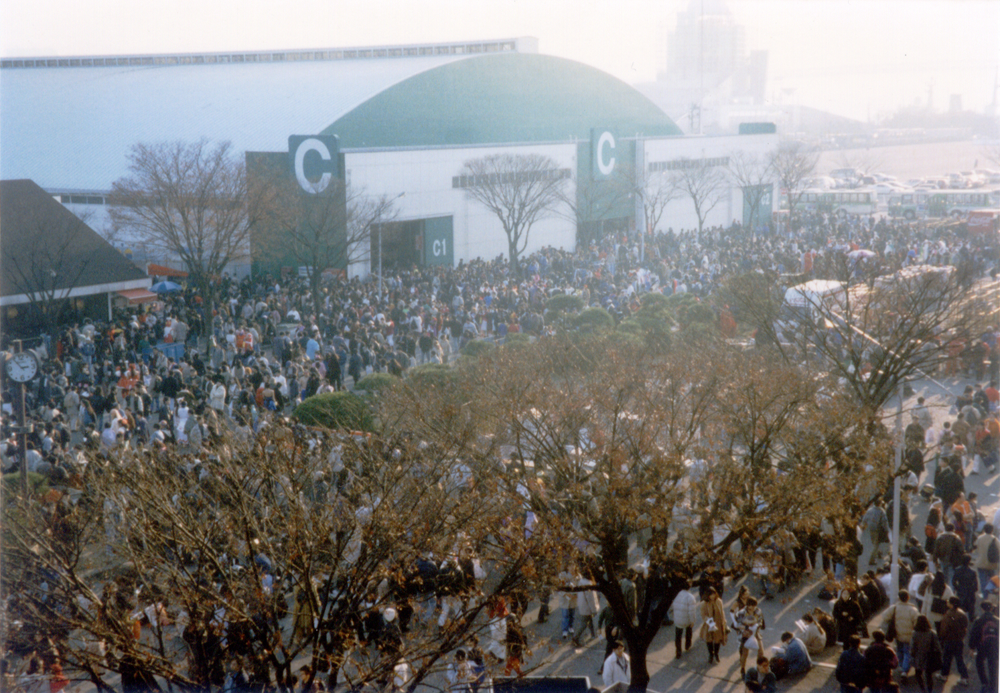
当時のコミケ会場はビッグサイトではなく晴海会場（東京国際見本市会場）だった。
晴海会場時代のコミケは、商業色がなく学祭ノリだった。
写真は徹夜組がコスプレしたまま収容されたC館（1995 年 撮影）。
（画像は wikipedia から抜粋 CC 表示-継承 3.0 ）
-
コンピュータを持ち寄る交流の場も展示即売会上で発生
コミケは電源確保ができないので、パソコンの持ち込みができないという問題がありました。 これに応える形で、コンピュータ関連に特化した「パソケ（パソケット）」という電源確保が可能なイベントも各地で開催されました。
パソケは展示即売会ですが、 何かを売ることが目的でなく、ただ自慢のパソコン環境を見せることや 仲間と会うことを目的に参加している人たちもいました。 もし海外デモシーンの方々がこの光景を見たら、恐らく「パーティ」だと認識したと思います。 ルーツも目的も形式も全く異なりますが、 海外デモパーティと似た光景が、同じころの国内イベントでも発生していたのは面白いです。 ファイル交換パーティから発展しても、展示即売会から発展しても、 行きつく先はコンピュータを持ち寄っての交流会になるわけです。
パソケのような展示即売会で、 もし余興としてコンペティションが開催されていたら、 デモコンポのようなものに発展していた可能性は考えられます。 しかし残念ながらそのようなことは起きませんでした。 パソケは最後まで展示即売会スタイルを逸脱することなく終了しました。
現在も続く末裔のイベントも、展示即売会スタイルを踏襲しています。
マイコン・インフィニット☆PRO-68K(MI68)
秋葉原で定期的に開催されるレトロ PC 中心のイベント。
パソケに近い雰囲気を今に引き継いでいる。
-
展示即売会がもたらした副作用
作品リリースの場として展示即売会が選択されたことが、 作品の内容やその後の行方に影響を与えることになりました。
-
作品の大半はゲームソフト
作品がリリースされる環境が異なると、そこで出てくる作品も異なってきます。 展示即売会では、お客さんはお金を払って作品を入手します。 お客さん側は、払った額に見合うだけ楽しませて欲しいと考えています。 作る側もそれを意識して、 単に技術力の高さを見せつけることが目的の作品であっても、 最低限ゲームとしての体裁を持たせたうえでリリースすることがほとんどでした。 そのような事情から、メガデモのようなもの（技術特化、非ゲーム）はほとんど存在しませんでした。
おしおきキライ！2（PC-98 対応、1992 年 ほんわかソフト）
技術デモとしても凄いが、ゲームとしても成立している例。
9 Fingers の踊るお姉さんに対抗できるのは、この踊る 唐沢＆金井 両氏しかいない。
これを作成された方は、後にコナミに入社し、魂斗羅ザ・ハードコア（1994年）の
似たようなシチュエーションのアクションシーンを実装されています。
-
アーカイブされない
コミケなどの展示即売会では、 歴史上重要な作品でもわずか数百コピーしか配布されないといったことが起こりがちです（展示即売会では数百コピー売れたらかなりのものですが）。 そしてそのような作品が、 どこかにアーカイブ（未来に伝達することを目的に収集・保存）されるかというと、そうではありません。
作品を売った側としても、 お客さんからお金を頂いて売ったものだから、後から無料で配布することには抵抗があります。 作品を買った側としても、 売られていたものだから許可なくコピーすることはできないと考えます。 その結果、コミケなどの展示即売会でリリースされた作品群は、 アーカイブされることなく死蔵状態に陥りがちです。
この状況は、海外デモシーンとは対照的です。 海外デモシーンでは、リリースされた作品を積極的にアーカイブする習慣があります。 アーカイブに収録の際、原作者に許諾を取るということはめったに行われません。 作品のコピーを配布することや、アーカイブ収録に協力することは無条件に良いこととされています （ pouet 等のアーカイブサイトでは、アーカイブ収録に貢献すると、ユーザーのスコアが上がる ）。 その結果、海外デモシーンの過去作品を調べることは比較的容易です。 一方で日本はというと、全く記録が残されていないので、過去作品を調べることは考古学のような状態になります。
-
作品の大半はゲームソフト
-
読者投稿プログラムを掲載していたプログラミング雑誌
ホビープログラミング成果物のリリース先としては、 コンピュータプログラミング雑誌も利用されました。
当時、読者投稿プログラムを掲載する雑誌として、 様々な機種のゲームを掲載していた「マイコンベーシックマガジン」や、 MSX のみを対象とした「MSX・FAN」等がありました。 その多くが、ゲームプログラムの投稿に特化したものでした。 一つのプログラムは数ページの紙面に掲載可能な程度の短いもので、 BASIC 言語で書かれている必要がありました。
一部のプログラマは、 これらの雑誌にマシン語（今で言うネイティブコード）で記述した高度なゲームを、 BASIC の DATA 文に変換して投稿していて、 その内容で激しい競争を展開していました。
N-TYPE by Bug太郎（NEC PC-8001 対応、マイコンベーシックマガジン 1988年4月号掲載）
PC-8001 で動くのも凄いが、少ない誌面に掲載されたプログラムに
3ステージ分のゲームとエンディングデモが入っているのは凄い
MSX・FAN では、マイコンベーシックマガジンよりも長いプログラムが掲載可能だったので、 非常に高度な読者投稿ゲームが多数掲載されていました。
「激走」三部作 by 米屋のチャチャチャ（MSX1 '89/3 '90/11 '91/11）
MSX・FAN 上でさらに凄かったのは、1 画面プログラムコーナーです。 これは、プログラムリストの表示結果がモニタの 1 画面以内に収まらなければならないという制約の中で作られた、 小さなゲームプログラムを扱うコーナーです。 このコーナーに投稿されていたゲーム群は、 単にプログラムコードを minify（短く）しただけではなく、 ハードウェアを特殊な方法で利用したものが多くありました。 短いにも関わらず、 MSX のプログラミングに精通している人が見ても、 一見して何が起きているかわからないほど高度で、 しかもゲームとしても成立しているという、 変態的なプログラムが多数掲載されていました。
デモシーン文化で例えるなら、 イントロぐらいの規模のプログラムが多数エントリされるデモコンポが、 毎月しかも複数の雑誌上で開催されているような状況です。
日本にデモシーンが存在しなかった理由を考察
日本初の本格的なデモパーティは、2001 年から開催されたオンラインのコンペティションである 2chparty とされています。 日本にデモシーンが定着したのは、おおむねこの時点からとされています。 ゲームやコンピュータが沢山ある当時の日本で、それまでなぜデモパーティやデモシーンが存在しなかったのか？は、 この界隈では解釈の判れる謎の一つです。 ここではその理由について考えてみたいと思います。-
そもそも海外のデモシーンはどのように発生したのか？
日本のことを考えるのに先立って、 まず欧州のデモシーンはどのように発生したのか？ を整理しておきます。
-
海外のホームコンピュータ上でクラッキングが流行
海外では Commodore 64（1982年発売）などのホームコンピュータがゲーム機としての役割を兼ねていて、爆発的なシェアを獲得していました。 ホームコンピュータ上ではゲームを遊ぶだけでなく、ホビープログラミング、市販ソフトの音楽データ吸出しやクラッキング （コピープロテクトを解除し、違法にコピーできる状態にすること） などが盛んにおこなわれました。
-
とくに共産主義体制下にあった国々では、正規の手段でのソフトウェア入手が困難だった
共産主義体制下に置かれていて、 正規の手段でのソフトウェア入手が困難だった国々では、 クラッキングはとても盛んに行われていました。 その名残のためか、共産圏・元共産圏の国々は現在のデモシーンでも強い勢力を保っています。 このあたり、なんでも買えた日本とは随分と事情が異なります。
-
LAN パーティからデモパーティに発展
クラッキングしたソフトをコピーするため LAN パーティが開かれました。 これが次第に大規模化していき、後のデモパーティにつながっていきます。
-
海外のホームコンピュータ上でクラッキングが流行
-
日本のゲーム機はホームコンピュータではなかった
日本の主要なゲーム機は、Commodore 64 のようなホームコンピュータではなく、据え置きゲーム機（ファミコン等）でした。 このことは、日本に海外のようなクラッキング文化が発生する機会を与えない要因の一つになったと言えそうです。
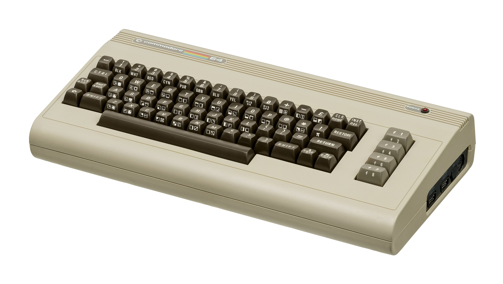
海外のホームコンピュータであり定番ゲーム機だった Commodore 64。
キーボード付きでプログラミングが可能。
（画像は wikipedia から抜粋 Public Domain）
余談ですが、ファミコンにも 当時北米向けに Commodore 64 対抗を意識したと考えられる Advanced Video System というホームコンピュータ仕様のプランがありました。 これは同時期の ファミリーベーシック V3 と同等のシステムと考えられます。 ファミリーベーシックはホームコンピュータとして十分な仕様ではなく、売上も良くはありませんでした。 Advanced Video System はキャンセルになってしまいました。
.jpg)
海外向けファミコンのプロトタイプ Advanced Video System。
残念ながらキャンセルになりキーボード等を持たない NES として発売。
（画像は wikipedia から抜粋 CC BY 2.0 ）
日本でも、1980年代初頭はホームコンピュータ構想がブームで、 ファミコンも「ファミリーコンピュータ」という名前が示す通り、 ホームコンピュータを意識した商品であったと考えられます。 Advanced Video System の前身であるファミリーベーシック（ver 1.0）は 早くに開発がスタートしていて、ファミコン発売前の時点でほぼ完成していたと言われています。 しかしファミコンはゲーム用途に特化した現在の構成で発売されました。
もしファミコンが当初からホームコンピュータとして万全の仕様でリリースされ、 かつ成功を納めていたら、 若者がホビープログラミング用途でそれを活用し、 クラッキング文化やデモシーン文化が発生していたかも知れません。
-
クラッキング行為も日本と海外では異なっていた
クラッキングが当時の日本に全く存在しなかったかというと、そうではありません。 とくに国産パソコン上では、むしろ相当な社会問題になるレベルで行われていました。 しかしここでも海外とはかなり状況が異なっていました。
-
海外のクラッキングとクラックトロ文化
海外で流行したクラッキングでは、 クラックに成功したチームがクレジットとして「クラックトロ」と呼ばれる独自の起動デモをソフトに挿入していました。
クラックトロはグラフィティ・アートと似ています。 グラフィティ・アートが描きにくいところに描くほど高評価を得られるのと同様、 クラックトロでは高度なプロテクトが掛けられたソフトをクラッキングし、 そのディスクの狭い空き領域に高度なデモを挿入することが高評価につながります。 クラックトロが発展し、分離独立し後のデモに繋がっていきます。
-
日本のクラッキングにはクラックトロが存在しない
日本では、パソコンソフトのコピープロテクトを解除するクラッキングツールが パソコンショップで販売されていました。 さらにその傍らでパソコンソフトのレンタルも行われていて、 クラッキングツールと空のフロッピーディスクが一緒に陳列販売されていました。 日本での違法コピーは、 クラッキングツールを買い、ソフトをレンタルし、自宅でひっそりコピーして即座に返却というスタイルであり、 海外のようなファイル交換のためのパーティは行われませんでした。
海外デモシーンであればクラックトロで名を馳せたかも知れない日本のクラッカーは、 コピープロテクト解除ツール作成をアルバイトとして請負っていました。 したがって、高度なプロテクトの解除に成功しても名が残ることはありませんし、クラックトロを挿入する習慣もありませんでした。 そもそもグラフィティ・アート文化自体も、日本にはほとんど存在しませんでしたし、 クラッキングがカッコいいという認識はなく、 クラックトロで名を馳せるといったようなことは考えられないことでした。
-
海外のクラッキングとクラックトロ文化
-
日本には海外デモシーンの「アンダーグラウンド」に相当するものがない
デモシーンは、「コンピューター・アート・アンダーグラウンド」が融合した文化です。 この 3 つの要素のうち、「アンダーグラウンド」がどこから来たのか、 元をたどって行くとファイル交換目的の LAN パーティや、 そのもっと先のクラッキングやクラックトロに行きつきます。 デモパーティにはアンダーグラウンドな雰囲気が漂っていて、 そこでリリースされたデモも、その環境で映えるようにデザインされました。
海外のデモパーティ（1991 年 TheParty）の様子。
ちらっと映り込んだスクリーンをよく見ると、定番コピーツールである X-COPY の文字が確認できる。
この映像と同時期、 日本にはコンピューターやアートは存在しましたが、 クラックトロ文化や LAN パーティのようなものが無く、 アンダーグラウンド成分がコンピューター・アートに迎合する機会に恵まれませんでした。
-
作品リリースの場が沢山あった日本、一方でアンダーグラウンドを選んだ海外デモシーン
当時の日本にはデモパーティは存在しませんでしたが、 個人が作成した作品をリリースする場は沢山存在しており、 特に不自由を感じることはありませんでした。
日本には、コンピューター・アート出現以前から、 それよりもはるかに巨大で歴史も長い「漫画・アニメ文化」が存在しました。 そして、コンピュータ上で個人制作された作品は、漫画・アニメ文化圏のインフラを借りてリリースすることが可能でした。 具体的には、作品リリースや交流の場として、漫画文化由来のコミケやその派生であるパソケが利用可能でした。 非リアルタイムの映像作品に対しては、 自主制作アニメ上映会の文化圏から派生した CG アニメコンテストのようなイベントもあります。 それ以外にも、 マイコンベーシックマガジンや MSX・FAN などの、 読者投稿型プログラミング雑誌上で作品を発表することも可能でした。
一方で海外デモシーンは、 作品発表の場を LAN パーティの集客力に乗っかることで発展させました。 日本側の感覚だと、ここでクラッキングにルーツを持つアンダーグラウンドなイベントが選択されたことの方が特異に感じられるのではないでしょうか。 しかし実際のところ、特異なのは日本の方です。 インターネット普及以前から、作品リリースの場に恵まれていたことや、 その一歩先にはプロとしての活動への入口も用意されていたという状況は、 全世界的に見るとあまり例がありません。 （日本と同じく北米などもデモシーン不毛の地域であること、 共産圏・元共産圏がデモシーンで強い勢力を持つことは、 すべて同様の理由で説明が付くと分析する方もいらっしゃいます。）
-
まとめ
コンピューターとアートが迎合する流れは、国や地域を問わず発生していました。 そこに、クラッキングを起源とするアンダーグラウンドな文化が迎合するのが、欧州で起きたことでした。 一方日本は、それに相当することが起こりませんでした。
欧州デモシーン文化成立の経緯には、その当時の環境が強く影響しています。 日本の状況は欧州とはかなり異なっていて、形成された文化圏も欧州デモシーンとは異なるものでした。 特に、日本のコンピューター・アートの世界がアンダーグラウンドと融合する機会に恵まれ無かったことは、 大きな違いを生む結果になったと考えられます。 日本のデモシーン文化は海外から流入して定着することになりましたが、かなりの時間が必要で、 2000 年代に入るまで待つ必要がありました。
{kind=link}
2021/02/03 初出
2021/02/11 最終更新
文責： よっしん
[戻る]